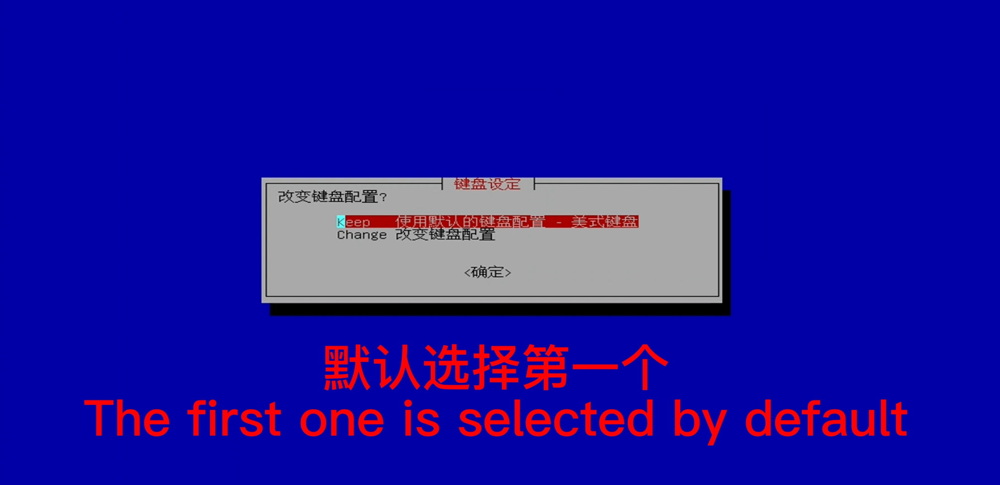
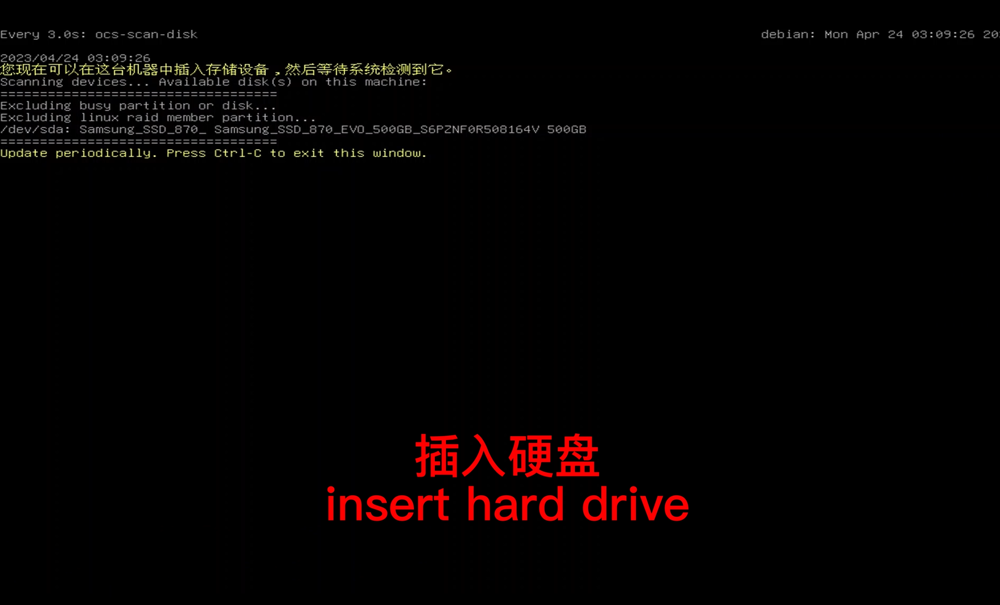
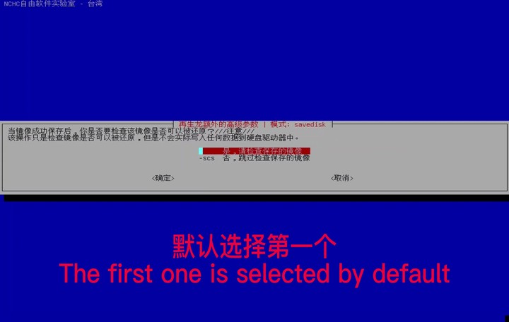

Backup OS Image
Basic principle: Make a mirror image of the IPC（You need to prepare another hard disk larger than 100g） Statement: To prevent the user from installing other drivers in IPC or destroying the system configuration during software, which will result in the inability to run the autopilot and start the driver, the original system can be restored through the backup image (the original image of the system has been attached to the U disk). Users can also back up their own system image, and can use the hard disk to save the image of IPC.
Prerequisites
To create a backup system image, follow these steps:
step-1：Insert the USB drive and press F12 during startup (a wired keyboard can be used for this operation) to enter the flashing startup interface.

step-2：Use hard disk for mirroring（select first）

step-3：Select the Chinese interface (you can also choose other languages)
step-4：Keep

step-5：Start Clonezilla(frist)

step-6：Save image file to hard disk

step-7：Select the first one when using a hard disk

step-8：Insert hard drive

step-9：When the hard disk is recognized，ctrl+c

step-10：Select the hard drive just mounted

step-11：Select the first

step-12：Select the directory to save

step-13：Done Enter

step-14：Default the first option(Beginner)

step-15：Savedisk

step-16：Name the file
step-17：Compress storage in zip(zip)

step-18：Default the first

step-19：Default the first

step-20：Default the first

step-21：Select——poweroff

step-22：Start copying

step-23：Wait for the automatic shutdown to complete
Note: 1. You need to prepare a hard disk to store your image. 2.The U disk is used as a boot disk, and the user needs to provide a hard disk when it needs to save its own image. Do not make any modifications, add or save other files on the U disk, so as not to damage the environment of the startup disk.